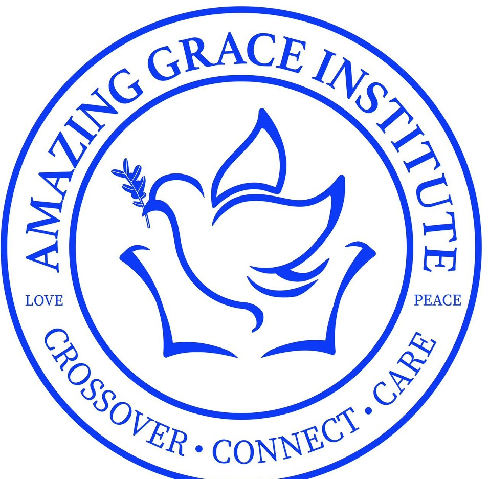
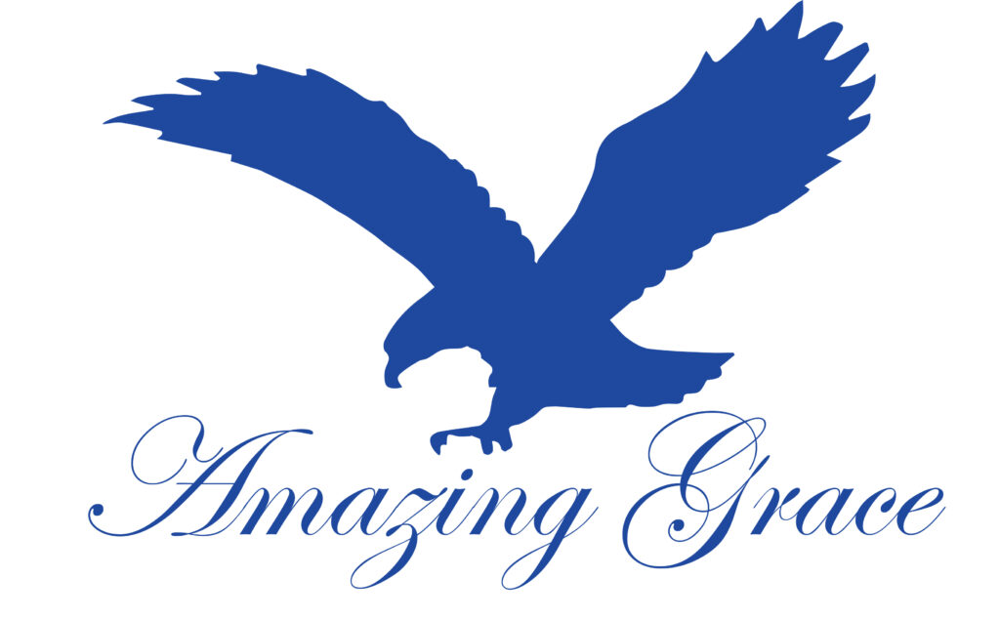
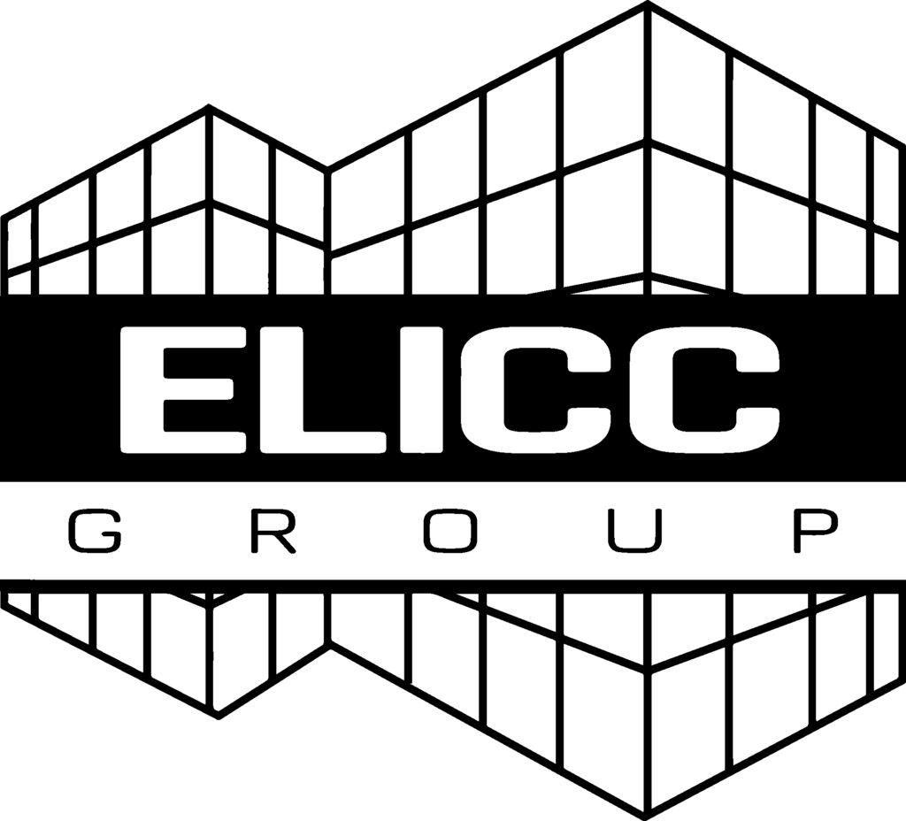
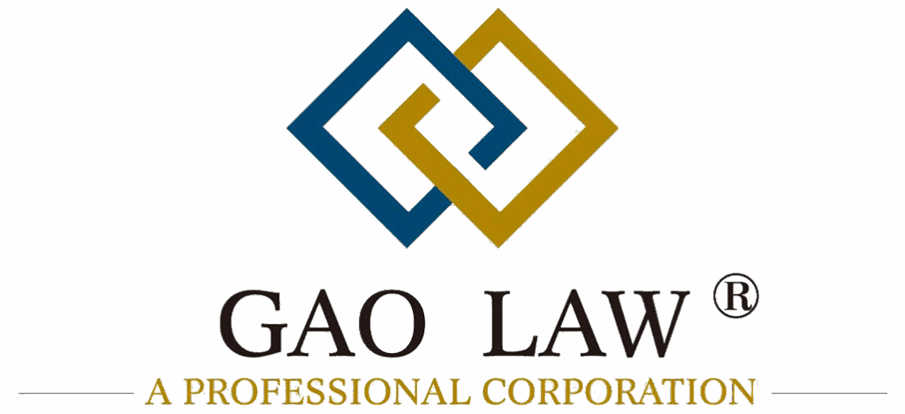
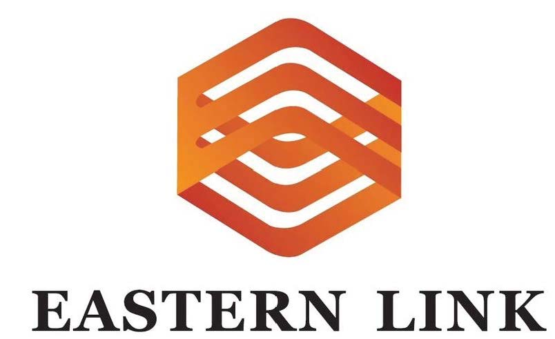
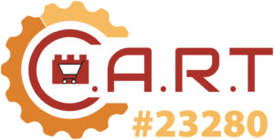
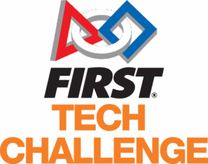
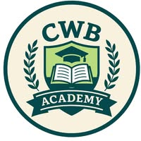

We’d love to hear from you! We’re here to answer your questions, listen to your suggestions, or help with your reservations.
Have a question, suggestion, or reservation request? Reach us directly at admin@escedu.org.
Our Amazing Sponsors


Amazing Grace Christian School

Elicc Americas Corporation
Bring tomorrow’s skylines to life!

GAO Law Firm
GAO Law Firm is committed to providing “professional and quality services”

Eastern Link Inc.
Eastern Link forwarding was born established in 2016 in Tijuana, Mexico. We provide import and export agency services, logistics services, and related consulting services-Maquila/IMMEX program setup, USMCA related rules. https://eastern-link.com/about-us
earn the trust of our customers through our unwavering dedication and passion, backed by the provision of our exceptional services
Affiliated Partners

C.A.R.T Robotics


CWB Academy
Rinconada de Otay C.P. 22457 Tijuana Baja California , Tijuana, Mexico, 22457
Riverview International Academy
Riverview is a language immersion school of choice in the Lakeside Union School District. https://www.lsusd.net/riverview/
Our Immersion Models are Unique in the World with Students Receiving Instruction in Three Languages with the Target being to Reach Proficiency in Two Languages, and to Achieve an Enrichment Level of Acquisition of a Third Language
Teaching students in Three Languages, Spanish, Mandarin and English, Stimulates a Different Part of the Brain and Provides Students the Neural Capacity to Learn Character-Based and Tonal Languages as well as Alphabet-Based Languages
dedicated to preparing our students to be the global leaders of tomorrow. Our outstanding curriculum is infused with essential 21st century learning skills including world language instruction, technology, critical thinking, and creativity.